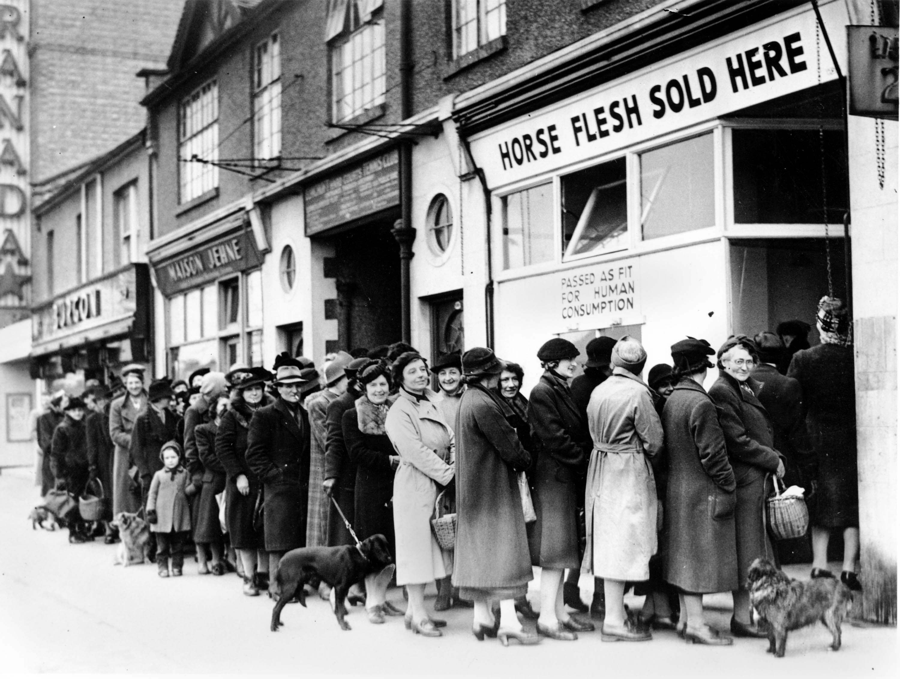

A loaf of Warburton's toastie sliced white bread costs £1.07 and contains 17 slices. (Of course, the liberal elite count the heels as valid slices when they are barely worth half a slice). Therefore the two heel pieces of a loaf of bread are worth around 12p. Most people would not pick 12p up off the floor and therefore I ask you, loyal reader, would you accept a transaction that for 12p a week you were required to eat a sandwich that tasted like biting into an egg-salad-filled briefcase. No? Neither would I. For some reason, old people are unable to shake of the idea that rationing has indeed ended and they are no longer required to queue up to get a slice of whatever racehorse had broken its leg that week.
